NC: 单细胞图谱揭示过敏性哮喘Th2细胞机制
原文：https://mp.weixin.qq.com/s?__biz=MzAwMzIzOTk5OQ==&mid=2247537992&idx=1&sn=58ff8c3180491619bfa77f242c03a886&chksm=9b3c2c18ac4ba50e1429e8ccdfbd27511933ae03a5723e6baf99dcec6d49f2a09df71b916be3#rd 合集：文献速递
一、写在前面
文章 Single-cell and chromatin accessibility profiling reveals regulatory programs of pathogenic Th2 cells in allergic asthma**（IF=15.7）** 发布于**《 Nature Communications》。**
本文聚焦于过敏性哮喘，其主要由2型细胞因子产生细胞（如2型天然淋巴细胞和Th2细胞）以及上皮细胞衍生的细胞因子共同作用。在过敏原暴露后，气道上皮细胞释放多种分子，包括促炎细胞因子和警报素，如IL-25、IL-33和TSLP，它们与抗原呈递细胞（如树突状细胞）共同促进Th2细胞从初始CD4+ T细胞分化，进而分泌2型细胞因子（包括IL-4、IL-5、IL-9和IL-13），驱动疾病发展。为进一步挖掘具体发挥致病作用的细胞群，作者利用了单细胞RNA测序和染色质可及性分析结合细胞流式分选等技术开展了本项研究。
如果需要数据分析指导 、生信热点全文复现 、自测数据个性化分析 辅导、实验科研服务和常态化实验学习，欢迎联系客服微信[Biomamba_zhushou]
二、主要内容
补充图1 HDAC1是限制HDM诱导的气道炎症的关键
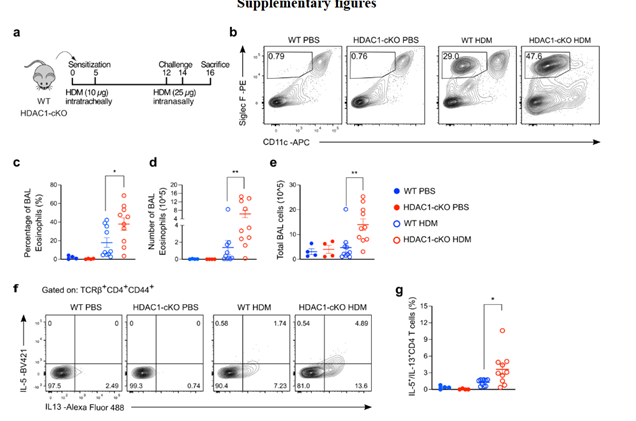
通过基因鼠和WT鼠的HDM造模加流式分析验证HDAC1在限制HDM诱导的气道炎症和pTh2细胞的细胞因子表达中起着关键作用。
图1 scRNA-seq分析揭示HDM响应中肺CD4+ T细胞的异质性
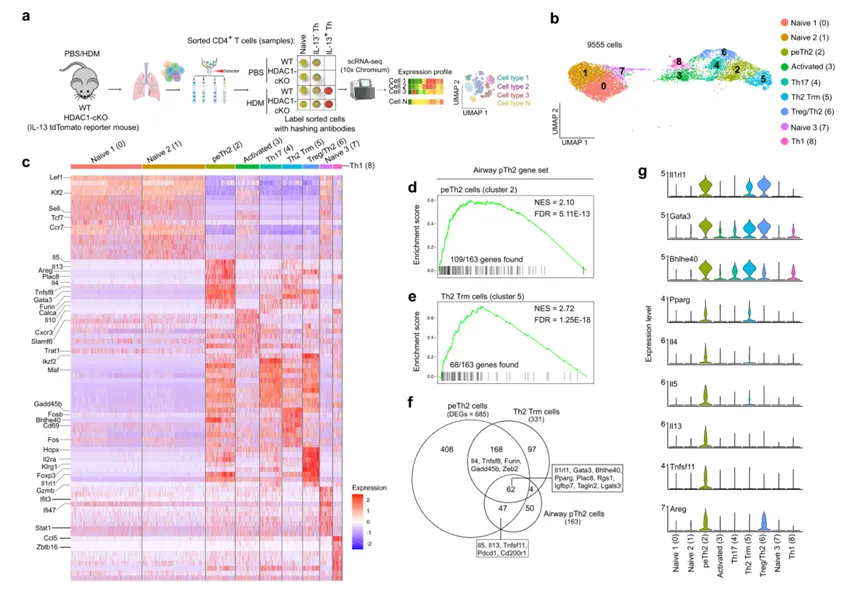
通过单细胞RNA测序分析健康和疾病状态下小鼠肺部CD4+ T细胞。研究发现了两个不同的pTh2细胞亚群（peTh2和Th2Trm）。peTh2细胞表达更高水平的Il4、Il5和Il13，而Th2Trm细胞表达更高水平的Cd69。此外，还发现了一个独特的Th亚群包含Treg和Th2细胞的特征，命名为Treg/Th2细胞，其特征包括Il1rl1、Gata3、Bhlhe40、Areg、Gzmb和FoxP3等基因的高表达。
图2 肺ST2+ Th亚群的比较
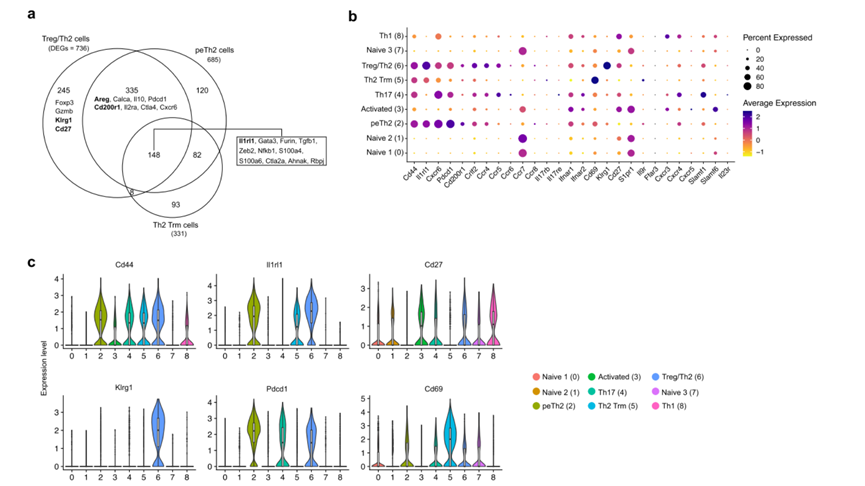
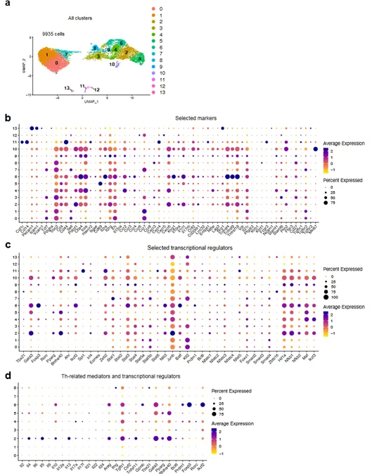
该图展示了不同肺ST2+ Th亚群（peTh2、Th2Trm、Treg/Th2和Treg）之间差异表达基因的重叠情况，并用于后续设计细胞分离。补充图标记了更全面的数据。
图3 流式细胞术表征HDM诱导过敏性哮喘中的pTh2亚群
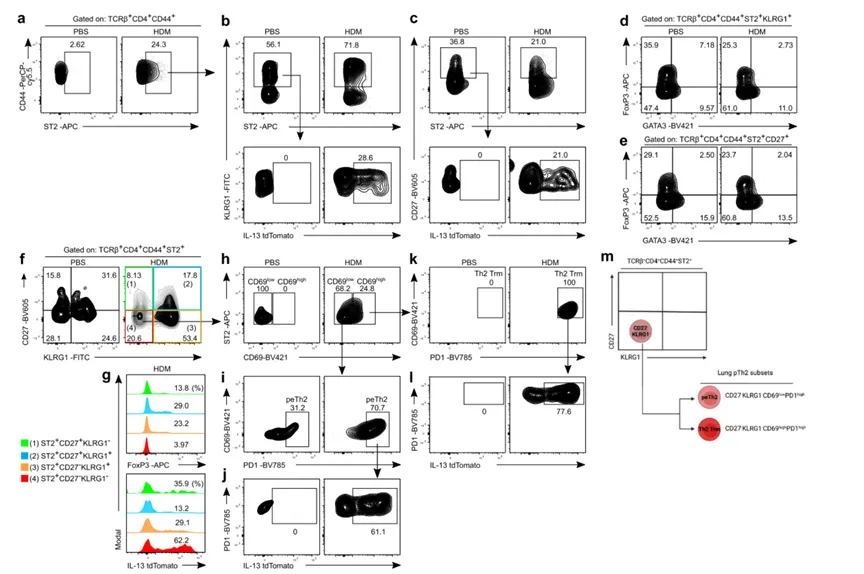
研究通过流式细胞术验证了肺部pTh2细胞亚群的存在，并定义了区分这些亚群的表面标记，这位后续进行pTh2细胞亚群提供了重要的实验基础。
补充图3 Th谱系特异性标记和pTh2细胞亚群的比较
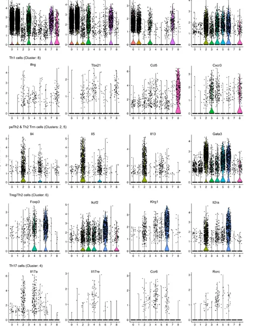
通过比较不同Th细胞亚群的基因表达，研究者进一步定义了pTh2细胞亚群的转录特征。
补充图4 ST2+ Th细胞的流式细胞术分选策略
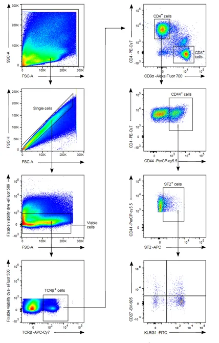
展示了从WT小鼠中分选肺ST2+ Th细胞的策略
图4 DAC1缺失增强pTh2亚群的致病性和Th2Trm细胞生成
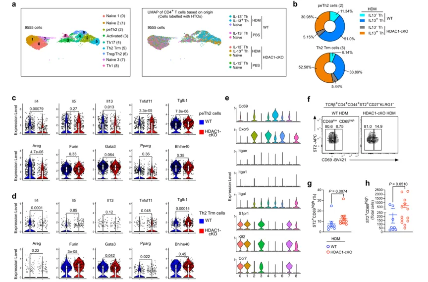
研究发现大多数pTh2细胞簇（peTh2和Th2Trm）中的IL-13+ Th细胞来自接受HDM处理的小鼠，且而Th2Trm细胞亚群中包含更多来自HDAC1-cKO小鼠的IL-13+ Th细胞。研究还发现peTh2和Th2Trm细胞之间存在不同的表达谱，许多基因在Th2Trm细胞中已经下调。作者再通过流式细胞术验证了HDAC1缺失导致肺部Th2Trm细胞增加，这进一步强调了HDAC1在调节Th2Trm细胞形成中的关键作用。
图5 pTh2细胞亚群表现出共享和独特的转录特征
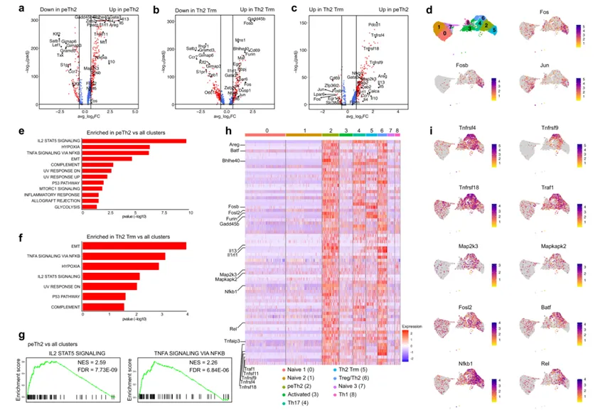
该图比较了peTh2细胞与其他所有簇、Th2Trm细胞与其他所有簇以及peTh2细胞与Th2Trm细胞之间的差异表达基因，发现两个pTh2细胞亚群都富集了多种转录调节因子，并找到其主要富集通路，强调了它们在IL-2/STAT5和TNF/NF-κB信号通路中的共同富集。
图6 GITR和TSLPR的共刺激驱动体外pTh2细胞的分化
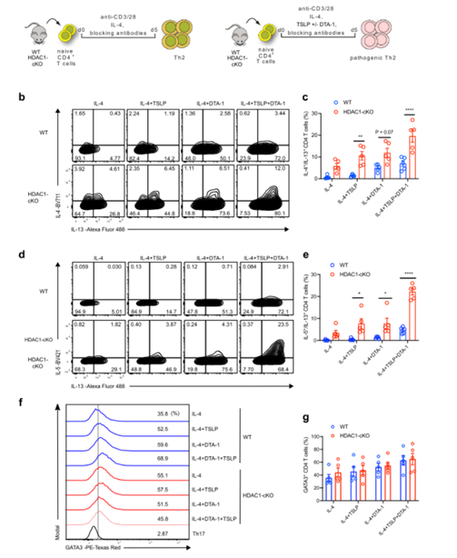
通过体外实验验证，TSLP和GITR的联合刺激能够显著增强Th2细胞的致病性特征，特别是IL-13和IL-5的表达。此外，HDAC1的缺失进一步增强了这些致病性细胞因子的表达。
图7 转录组和蛋白质组分析揭示体外生成的pTh2细胞与肺peTh2细胞之间的共有特征
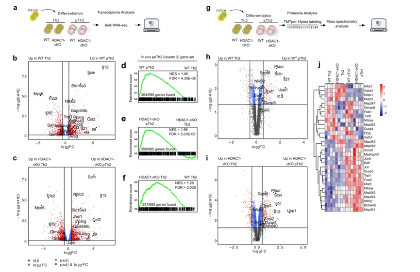
研究通过转录组和蛋白质组分析进一步揭示了体外生成的pTh2细胞与肺peTh2细胞之间的相似性，强调了HDAC1在限制pTh2细胞致病性中的关键作用
补充图6 | 体外生成的pTh2细胞的转录组分析
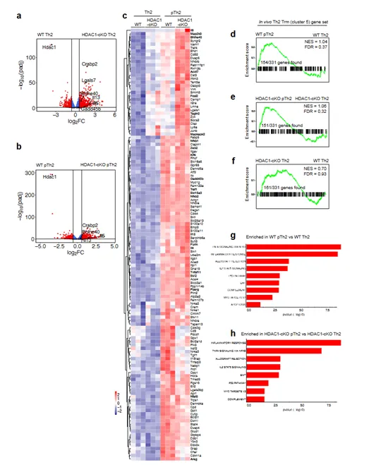
通过转录组分析进一步揭示了pTh2细胞的分子特征，并强调了HDAC1在限制pTh2细胞致病性中的关键作用
图8 p38 MAPK信号通路调控pTh2细胞中IL-5和IL-13的表达
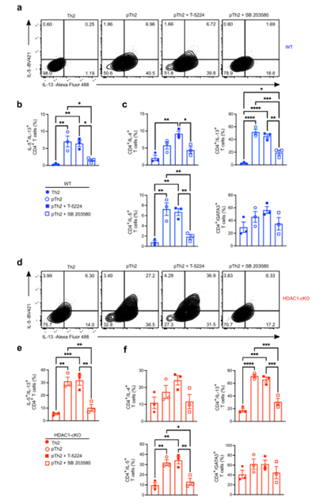
通过细胞干预实验验证p38 MAPK信号通路在pTh2细胞的分化中起着关键作用，特别是调控IL-5和IL-13的表达。p38 MAPK抑制剂SB 203580显著抑制了这些细胞因子的表达，而AP-1信号通路的抑制对pTh2细胞的分化影响较小。
补充图7 抑制AP-1和MAPKs对体外生成的pTh2细胞的影响
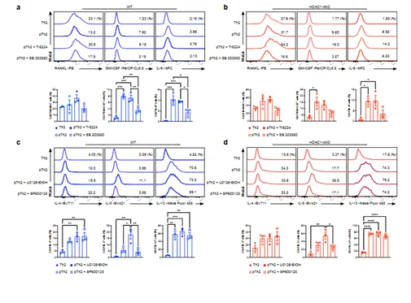
通过细胞实验表明p38MAPK信号通路在pTh2细胞的分化中起着关键作用，而AP-1和ERK1/2、JNK信号通路的抑制对pTh2细胞的分化影响较小。
图9 在致病性与经典Th2细胞中，2型细胞因子表达在染色质水平上受到差异性调控染色质可及性分析
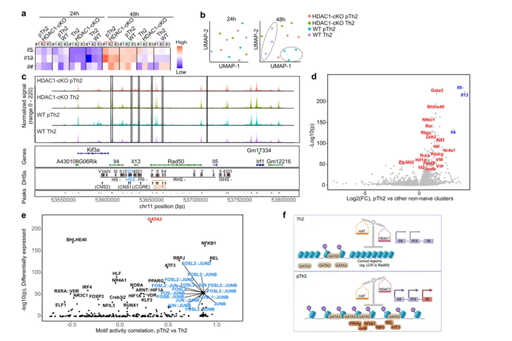
使用ATAC-seq技术，对WT和HDAC1-cKO小鼠的Th2细胞和pTh2细胞在培养24小时和48小时后进行染色质可及性分析。结果显示，pTh2细胞在48小时时的染色质可及性显著增加，表明pTh2细胞在致病性条件下表现出更高的染色质开放性。结论表明在致病性Th2细胞中，Th2细胞因子基因位点的染色质可及性显著增加，这与GATA3和其他转录因子的结合位点增加相关。这些转录因子的结合促进了细胞因子的表达，特别是IL-5和IL-13。研究还发现，在HDAC1缺失的情况下，染色质可及性增加，导致细胞因子表达增强。这些发现揭示了pTh2细胞在染色质水平上的调控机制，强调了HDAC1在限制pTh2细胞致病性中的关键作用。
三、总结与展望
本研究通过单细胞RNA测序和染色质可及性分析，揭示了过敏性哮喘中pTh2细胞的异质性和调控程序。研究发现pTh2细胞存在两个不同的亚群，作者同时建立了体外模型来研究pTh2细胞。此外，研究还揭示了HDAC1在pTh2细胞分化中的调控作用，为开发新的治疗策略提供了潜在的靶点。研究运用了单细胞RNA测序、染色质可及性分析、流式细胞术和体外细胞分化实验等技术。作者通过以上技术进一步深入挖掘了过敏性哮喘的机制，也为未来相关研究提供了新的研究基础和临床诊疗新靶点。

如何联系我们

 留一个领取资料、开箱即用的单细胞分析镜像的微信号[Biomamba_zhushou]，方便各位随时交流。同时我们也构建了交流群矩阵，欢迎大家入群讨论。
大家可以阅读完这几篇之后添加给生信入门初学者的小贴士
没有检索，就没有发言权
留一个领取资料、开箱即用的单细胞分析镜像的微信号[Biomamba_zhushou]，方便各位随时交流。同时我们也构建了交流群矩阵，欢迎大家入群讨论。
大家可以阅读完这几篇之后添加给生信入门初学者的小贴士
没有检索，就没有发言权
已有生信基地联系方式的同学无需重复添加

 您点的每个赞和在看，我都认真当成了喜欢
您点的每个赞和在看，我都认真当成了喜欢